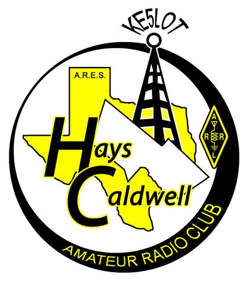
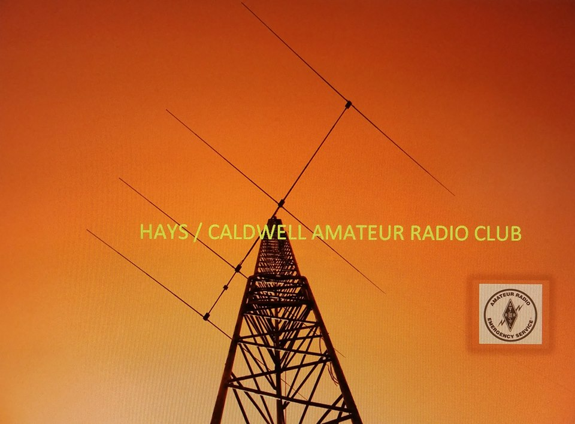
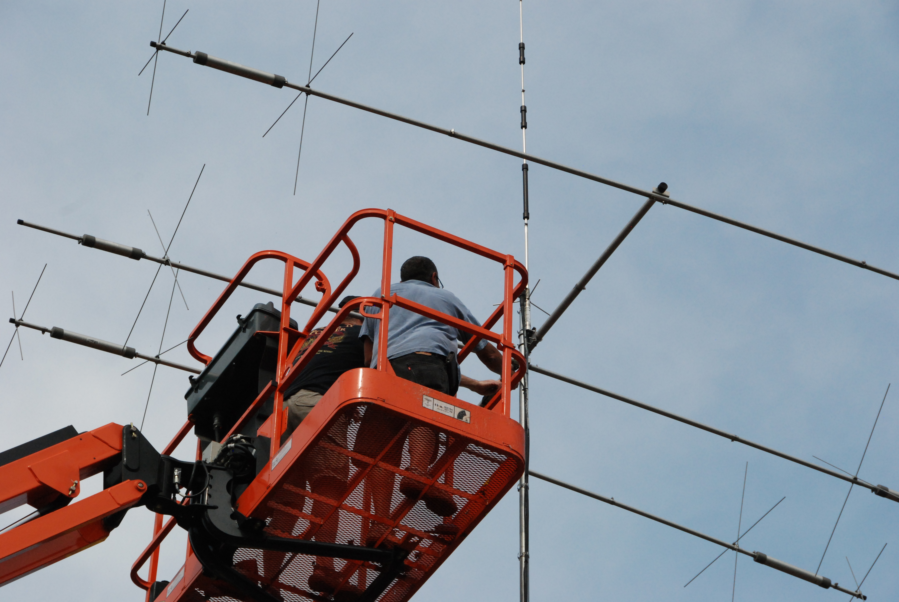
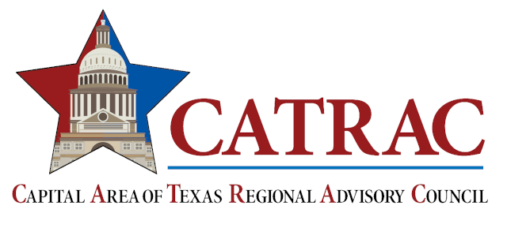
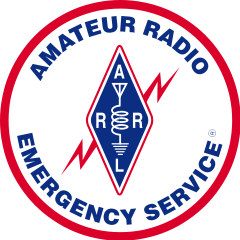
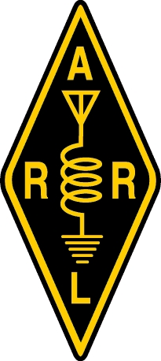

Solar-Terrestrial Data
QTH Weather
KYLE Hays-Caldwell Amateur Radio ClubMembership
Annual dues are $20, payable each January by cash, check, or PayPal.
Note: PayPal adds a $1.20 processing fee.


Hays-Caldwell Amateur Radio Club (HCARC) is a group of hams from the Texas counties of Hays and Caldwell, south of Austin. We serve the communities of Buda, Kyle, San Marcos, Wimberley, Dripping Springs, Driftwood, Niederwald, Mountain City, Woodcreek, Uhland, and Martindale in Hays County, and Lockhart, Luling, Prairie Lea, McMahan, Lytton Springs, and Fentress in Caldwell County.
We hold monthly in-person meetings at the Kyle Public Safety Center, 1700 Kohlers Crossing, Kyle, TX 78640 — the third Saturday of every month except December at 10 AM.
On-the-air, we meet on the club repeater: 147.050 MHz, 114.8 tone, +offset, every Tuesday night at 7:30 PM. All amateurs are encouraged to check in.
Club members also get access to the club Discord channel.


📻 View Current ARRL Band Chart »



Annual dues are $20, payable each January by cash, check, or PayPal.
Note: PayPal adds a $1.20 processing fee.